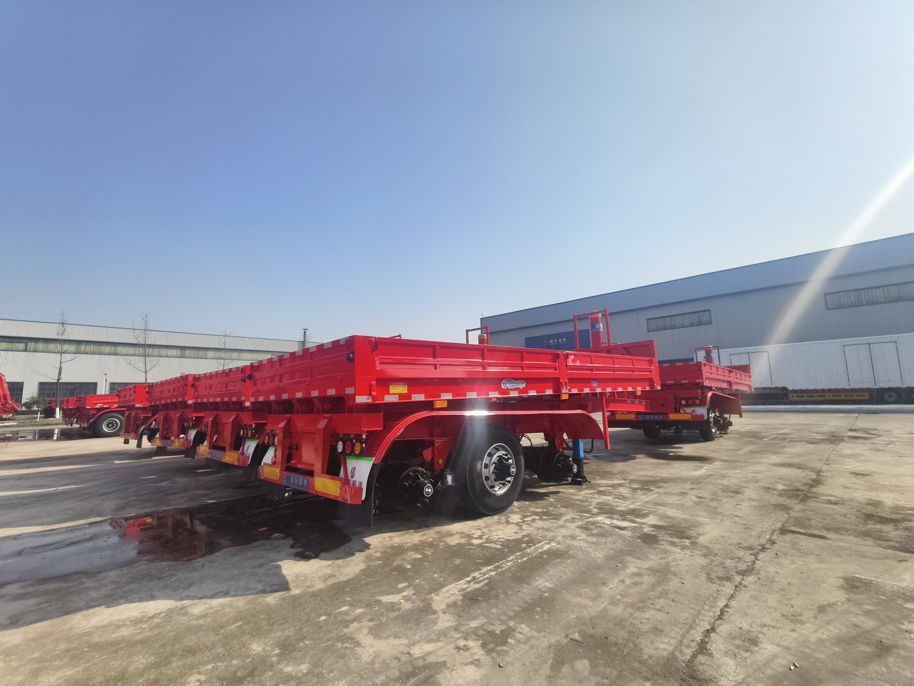

01
先说清货物
告知散装货物名称、形态、含水或黏附情况，以及计划每趟重量。砂石、煤炭等不同货物的适配，应按具体车厢与车型核对，不作全系通用承诺。
TIPPER SEMI-TRAILERS
看清货物、卸料方向与场地，再确认型号配置。

PRODUCT OVERVIEW
散装货物运输的选型，需要同时了解货物形态、密度或每趟重量，以及卸料场地。不同货物、卸料方向和车厢形式不能只按一张外观图作决定；请提供实际任务，由双方核对具体车型及设备。
本页收录9款自卸及平板自卸半挂车。以EHJ9400ZHX为例，公告总质量为40000 kg，额定载质量列有31500、31800、32270 kg；不同型号的车长与整备质量并不相同。
40000 kg
3 轴
9 款
先讨论实际运输任务，再核对对应型号与配置。
告知散装货物名称、形态、含水或黏附情况，以及计划每趟重量。砂石、煤炭等不同货物的适配，应按具体车厢与车型核对，不作全系通用承诺。
说明后翻或侧翻需求、卸料设备、场地空间和道路条件。具体卸料形式、举升设备及使用要求，需要针对选定车型确认。
总质量不是额定载质量。询价时同时核对目标型号的额定载质量、整备质量和长度选项，不能把最长车身与某个载质量数值自行拼成一种配置。
下列为现有车型公告参数摘录；长度与载质量列项不能自行组合，详情请点击完整型号。
楚源牌 · 自卸半挂车
公告生产企业：襄阳楚聚源汽车制造有限公司
楚源牌 · 自卸半挂车
公告生产企业：襄阳楚聚源汽车制造有限公司
楚源牌 · 自卸半挂车
公告生产企业：襄阳楚聚源汽车制造有限公司
楚源牌 · 自卸半挂车
公告生产企业：襄阳楚聚源汽车制造有限公司
楚源牌 · 自卸半挂车
公告生产企业：襄阳楚聚源汽车制造有限公司
楚源牌 · 平板自卸半挂车
公告生产企业：湖北欧阳华俊机械设备有限公司
楚源牌 · 平板自卸半挂车
公告生产企业：湖北欧阳华俊机械设备有限公司
襄汽牌 · 自卸半挂车
公告生产企业：湖北欧阳聚德汽车有限公司
襄汽牌 · 自卸半挂车
公告生产企业：湖北欧阳聚德汽车有限公司
公告总质量、额定载质量与整备质量应分别理解。这里摘录的是对应型号的公告选项，实际配置、适用组合与当前供货情况请询价确认。
生产企业与品牌按具体公告型号分别列示。

公司位于湖北省襄阳枣阳市，成立于2017年，主营半挂车研发与制造。企业介绍、厂区与联系方式可在官网关于我们页面继续核对。
查看企业介绍与厂区信息 →公开动态 · 2026-06-05：外贸精品侧翻栏板半挂车批量发车。原文展示外贸车辆整装待发情况，可用于了解产品与备货场景。
阅读企业公众号原文 ↗以下为外观与配置讨论示例；具体型号、尺寸、用途和选装范围需进一步确认。

实车图片与AI示意用于了解外观；公告参数以对应型号为准，选装及配色以双方确认的订单为准。
信息越具体，越方便核对车型与配置；价格、供货时间及最终方案按询价确认。
货物名称、照片、形态或密度、黏附情况及每趟计划重量。
卸料方向、场地照片、可用空间、作业设备和主要道路条件。
牵引车型号及连接信息，现有液压或相关设备资料，使用地区。
拟选车型、车长需求、轮胎与悬挂选项、数量及期望使用时间。
可以先提交货物与使用场景，再由销售对接型号和配置。已有明确型号时，请填写完整型号，避免只填写车辆类别。
带上需求，开始选型询价 →